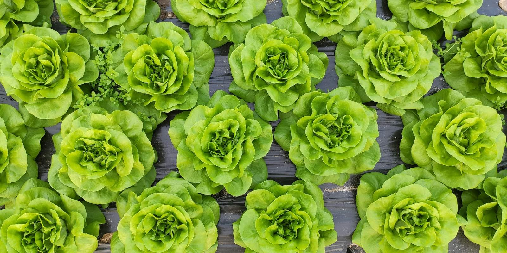
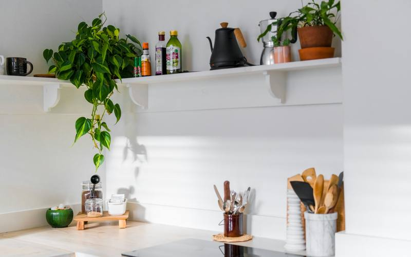
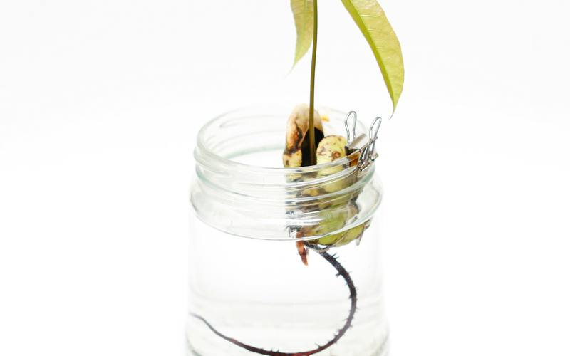

Grow clean food in small spaces, on a budget
Simple, soil-free growing for apartments, tiny homes, RVs, and mobile homes, with tips that hold up in Texas heat.
Kratky jars
No pump, no power: a mason jar and a net pot.
DWC buckets
An air pump and a bucket for bigger, faster plants.
Simple NFT
Low-cost channels for a steady stream of greens.
Texas-tough
Tips that hold up when the heat hits.

Hi, I'm Julia
I write about beginner hydroponics: Kratky jars, deep water culture buckets, and simple NFT channels you can build without a big budget or a backyard. My book, The Soil-Free Farming Revolution, walks you through it step by step, including a chapter on growing through Texas summers. More about me.

Free Kratky mason-jar mini-guide
Six printable pages to grow your first head of lettuce in a jar, no pump, no power.
Latest posts

How to Grow Kratky Lettuce in a Mason Jar
A plain-spoken, step-by-step guide to growing one head of lettuce in a mason jar with the Kratky method: no pump, no power, no soil.

Building a Hydroponic Starter Setup for Under $50
How to put together a simple, low-cost Kratky or DWC starter setup, what to buy, what to reuse from home, and where beginners overspend.

5 Easiest Crops for First-Time Hydroponic Growers
The five most forgiving crops for beginner hydroponics, from loose-leaf lettuce to basil, with tips for each and notes on growing them in Texas heat.

Beginner pH and EC/PPM Explained (Without the Chemistry Class)
What pH, EC, and PPM mean in hydroponics, why they matter, the ranges extension specialists recommend for leafy greens, and how to test on a budget.

Keeping Hydroponic Reservoirs Cool in a Texas Summer
Practical, low-cost ways to keep nutrient water cool when Texas heat hits, plus why warm water causes problems for roots and which crops to grow in summer.

Fixing Root Rot and Algae in Beginner Hydroponics
How to spot root rot and algae in jars, totes, and buckets, what usually causes them, and simple steps to prevent and recover from both.